Aucune fiche ne correspond. Essaie un autre mot.
Français 58 fiches
- -é, -er, -ez ou -ait ?
- Accord du participe passé
 Choisir une source fiable
Choisir une source fiable- Déterminants et pronoms : les sous-classes
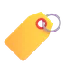
Épithète et complément du nom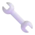
Être ou avoir au passé composé ?- Former un adverbe en -ment
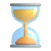
Imparfait et passé simple dans un récit Intensité, certitude et probabilité
Intensité, certitude et probabilité- L'accord de l'adjectif
- L'accord du verbe avec le sujet
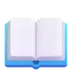
L'infinitif du verbe- L'ordre alphabétique
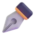
La ponctuation Le champ lexical
Le champ lexical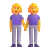
Le féminin des noms et des adjectifs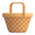
Le groupe nominal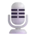
Le narrateur et le point de vue- Le paratexte : autour du texte
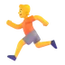
Le participe présent- Le passé composé
- Le pluriel des noms et des adjectifs
- Le sens des mots
- Le vocabulaire
- Les antonymes (contraires)
- Les classes de mots
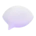
Les expressions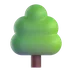
Les familles de mots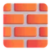
Les fonctions dans la phrase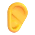
Les homophones- Les modes du verbe
- Les mots composés
 Les mots de liaison (connecteurs)
Les mots de liaison (connecteurs)- Les niveaux de langue
 Les organisateurs du récit
Les organisateurs du récit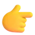
Les pronoms- Les reprises dans un texte
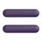
Les synonymes- Les temps composés et le futur proche
- Lire : fait, opinion, intention
 Lire entre les lignes (inférences)
Lire entre les lignes (inférences)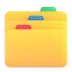
Mot générique, mot spécifique Mots à connaître par cœur
Mots à connaître par cœur Participe passé : sans auxiliaire et avec avoir
Participe passé : sans auxiliaire et avec avoir- Passé simple et conditionnel présent
- Pluriels et accords
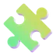
Préfixes et suffixes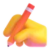
Présent, imparfait, futur- Réel ou imaginaire ? Vraisemblable ou non ?
- Relire pour corriger
- Repérer le subjonctif et les participes
- Suivre plusieurs consignes
- Sujet et compléments
- Sujet, prédicat et complément de phrase
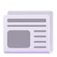
Types de textes et intentions- Types et formes de phrases
- Verbes en -er à radical variable
- Voix passive et mise en évidence
 Mathématiques 55 fiches
Mathématiques 55 fiches
- Additionner des fractions
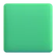
Aire et périmètre- Arrondir un nombre
- Assemblages de cubes
- Calcul mental et calcul réfléchi
- Calculer avec des fractions
- Calculer avec la monnaie
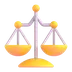
Comparer des fractions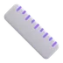
Convertir les mesures- Diagonales, médianes et hauteurs des quadrilatères
- Encadrer un nombre décimal
- Ensembles, arbres et tableaux
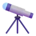
Estimer un résultat- Établir l'horaire d'une journée
 Formules d'aire des quadrilatères et du triangle
Formules d'aire des quadrilatères et du triangle- Fraction, nombre décimal et pourcentage
- Heures et durées
 L'échelle d'une carte
L'échelle d'une carte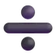
La division et le reste- La droite graduée
 La moyenne
La moyenne- La proportionnalité
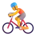
La vitesse moyenne- Le calendrier
- Le cercle et le disque
- Le signe = et les égalités
- Le vocabulaire des opérations
 Le volume
Le volume- Les angles
 Les axes de symétrie
Les axes de symétrie Les caractères de divisibilité
Les caractères de divisibilité- Les développements des solides
- Les énigmes logiques (tableau à double entrée)
 Les fractions
Les fractions- Les graphes fléchés
- Les mouvements : glisser, retourner, pivoter
 Les nombres décimaux
Les nombres décimaux- ⬢Les polygones réguliers
- Les pourcentages
- Les priorités et les parenthèses
- Les quadrilatères
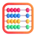
Les quatre opérations Les solides
Les solides- Les suites de nombres
- Les températures
 Les triangles
Les triangles- Lire des données
- Lire, écrire et décomposer les nombres
 Même périmètre, aires différentes
Même périmètre, aires différentes- Multiples, diviseurs et nombres premiers
 Ordres de grandeur des mesures
Ordres de grandeur des mesures- Promotions, bénéfice et perte
- Résoudre un problème
- Symboles et codage en géométrie
- Unités d'aire et de volume
 Histoire-géographie 38 fiches
Histoire-géographie 38 fiches
- Changements et continuités
- Climats et grands milieux
- Comparer des vues aériennes
- Continents, fleuves et montagnes
- Critiquer un document
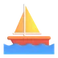
Explorations et colonisations (XVe-XVIIIe siècle)- Gallo-Romains et Francs
- L'eau et le relief
- L'échelle d'une carte
- 🇪🇺L'Europe et l'Union européenne
- 🇧🇪La Belgique
- La densité de population
- La ligne du temps
- La population du monde
- Le globe : lignes et océans
 Le peuplement de la Belgique
Le peuplement de la Belgique- Le planisphère : continents, océans, lignes
- Le réchauffement climatique
- Les 10 provinces et leurs chefs-lieux
- Les cours d'eau de Belgique
 Les migrations vers la Belgique après 1945
Les migrations vers la Belgique après 1945 Les modes de vie à travers le temps
Les modes de vie à travers le temps- Les moments clés de l'histoire de nos régions
- Les moyens de transport
- Les périodes de l'histoire
- Les régions naturelles de Belgique
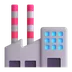
Les secteurs d'activité- Les siècles
- Les sources de l'historien
- Lire une carte
- Millénaires, siècles et an 1
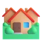
Paysages et habitat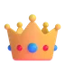
Personnages de l'histoire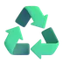
Produire et consommer autrement- Quelques dates clés
- Régions, Communautés et langues
- S'orienter
- Trouver une information
Sciences 42 fiches
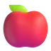
Alimentation et santé- Circulation et respiration
- Classer en ensembles emboîtés
- Classer les vivants
- Cycles de vie et métamorphoses
- Digestion, respiration, circulation : ensemble
- Fait, hypothèse ou jugement ?
- Instruments et unités
- L'air
- L'électricité
- L'énergie
- La chaleur et les isolants
- La chaleur voyage du chaud vers le froid
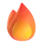
La combustion- La fleur, du pollen au fruit
- La lumière et le son
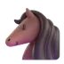
La notion d'espèce- La Terre, le Soleil et la Lune
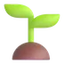
La vie des plantes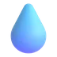
Le cycle de l'eau- Le modèle de la ventilation
- Le régime alimentaire
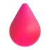
Le sang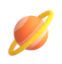
Le système solaire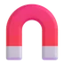
Les aimants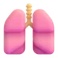
Les appareils du corps- Les attributs des animaux
- Les chaînes alimentaires
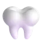
Les dents- Les états de la matière
- Les matériaux
- Les transformations d'énergie
- Limiter les pertes de chaleur
- Lire un tableau ou un graphique
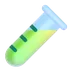
Mélanges et séparation- Milieux, décomposeurs et champignons
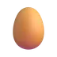
Ovipare ou vivipare ?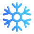
Passer l'hiver- Physique ou chimique ?
- Rythme cardiaque et ventilation
- Trier ses déchets
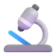
Une expérience juste